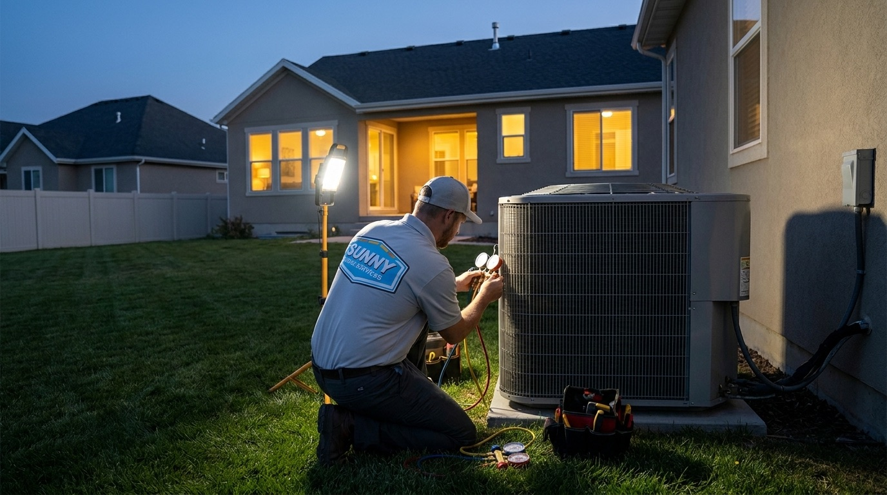
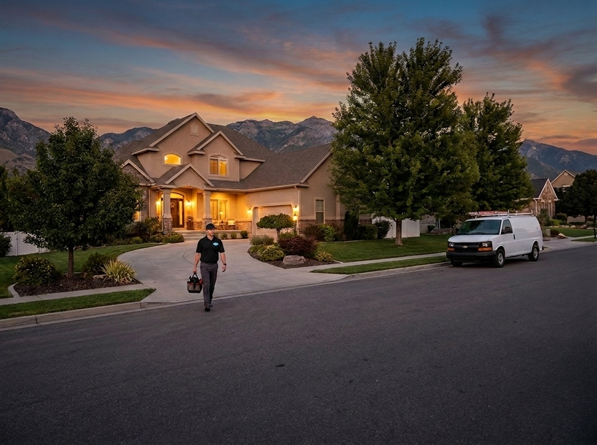

385.853.8116


The summer heat on the Wasatch Front regularly exceeds 90°F and occasionally reaches 100°F, which means a reliable air conditioner is an absolute necessity. Sunny Home Services technicians are available 24/7 for emergency AC repair on the Wasatch Front, in case you’re dealing with a sudden issue. We’ll get you back to a cool and efficient home as soon as possible.
Sunny Home Services is proud to provide efficient, reliable emergency air conditioner repair in our the Wasatch Front community. While a hot summer day makes for a great visit to Sunset Beach, the heat loses its charm quickly when you can’t cool your house down when you return. Our team provides comprehensive AC repairs around the clock, ensuring a system shutdown or other issue doesn’t put your comfort or safety at risk.

If you’ve been looking for emergency air conditioning service near you, the team at Sunny Home Services has you covered. With more than 30 years of local experience, we’ve learned the most common AC issues, and we arrive day or night to get your system back on track. Don’t toss and turn in the heat, give us a call, and we’ll send a technician to your home the same day for an AC repair you can count on.


How do you know when it’s time to call a 24-hour AC service near you? These are the most common signs that you need immediate AC repair:
You should always leave the diagnosis and troubleshooting of a shut-down AC to a trained professional. If your AC shuts down during the peak of a Utah summer, it could put vulnerable family members and pets at risk. Contact us anytime to get your system up and running again.
Refrigerant is designed to work in a closed-loop system, but over the years, your refrigerant lines may develop tiny leaks, allowing it to escape and reducing your air conditioner’s performance. Refrigerants are hazardous to handle without proper protection, so contact our 24-hour AC service if you’re dealing with severe performance issues, notice an oily residue on the refrigerant lines, or hear hissing or bubbling sounds from the system.
Water leaks often result from clogs or other issues with the condensate drain line, but they can also indicate problems elsewhere in the system. To avoid mold growth, rotten wood, and further damage to your AC, contact our HVAC repair team as soon as you notice water leaks from your system.
If your AC is making noises beyond the standard hum of a running motor, it’s time to shut off the system and call for help. Banging, grinding, or screeching noises usually indicate that a component is loose, damaged, or completely broken off. Continuing to run the unit will likely cause further damage. Have a pro inspect the system and replace any damaged parts to prevent further issues.
If you smell musty, mildewy, or burning odors from your HVAC vents while running the AC, it’s a sign of an impending emergency. Different odors point to different issues, whether it’s mold growth in HVAC ducts, mildew in the air conditioner, or dangerous power supply problems causing an acrid, smoky odor. Shut down the system and have an emergency AC repair pro perform the necessary repairs.
An important symptom of AC issues is unexplained jumps in your energy costs. If your utility bills keep rising in the summer, despite no changes in your HVAC usage, it means the system is struggling to keep up with the heat. Ignoring this issue may result in a system shutdown, so you’ll ultimately save money by proactively getting an inspection and repair.
If your air conditioner is blowing warm air, it can be more than an inconvenience. It can put your household at risk of heat exhaustion and other health issues. An AC blowing warm air can be caused by airflow issues, low refrigerant, or frozen coils. Rely on our trained HVAC technicians to restore cool airflow throughout your space.
Here’s what to expect when you contact our team for emergency AC service on the Wasatch Front:
Prevent unnecessary stress by going through these simple AC troubleshooting steps before calling a pro:
With over 30 years of combined industry experience, Sunny Home Services takes pride in being the HVAC solution for our the Wasatch Front community. We understand the importance of your AC, which is why you can count on our background-checked, fully certified technicians to arrive as quickly as possible. We’ll work carefully and efficiently to find and fix the root cause of your issue.
We’re proud to offer enterprise-grade scheduling with a small-business feel, ensuring our clients get polished, professional services without compromising the personal touch.
The offers from our door hanger, redeemable when you book. Mention them when you call.

If you’re facing AC issues in your Wasatch Front home, you don’t need to suffer through one more sweaty, sleepless night. Our same-day HVAC repair services are fast, reliable, and available anytime, so you can get back to a safe, comfortable home in as little as one day. Contact us today for more info on our AC repair work or to get immediate AC support on the Wasatch Front.